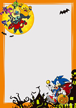
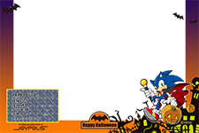
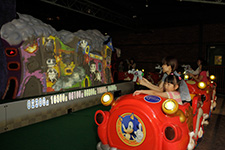

東京ジョイポリスの情報を紹介
2013.09.30
東京ジョイポリスでは10月1日（火）～11月4日（祝）『HAPPY HALLOWEEN ジョイポリス 2013』を開催！
この時期だけのお楽しみ、「ハロウィン ソニック」がアトラクションやイベント、ジョイポリス限定景品になって登場♪
| ソニックカーニバル | ゲームクリアするとぬいぐるみ「ハロウィン ソニック」貰えます。 1ゲーム 200円 ※「ハロウィンソニック」スーパージャンボぬいぐるみは 無くなり次第終了となります。 |
|---|---|
| ダイバ写真館むちゃプリ | コスプレして撮影できる高画質デジタルフォトスタジオ。 500円～ ※パスポートで1グループ一枚Sサイズ無料。  |
| ジョイポリ探検隊 | 館内に潜む「謎」を解き明かすアトラクション。 クリアすると秘宝庫で記念撮影が！ 見事クリアして限定フレームで撮影しよう！ 600円（パスポート利用可）  |
| ソニック ゴーストシューティング | ハロウィンにピッタリの新アトラクション。 “テイルス”が発明した乗り物「ゴーストシューター」に乗って、お化け退治の冒険に出発！ 500円（パスポート利用可）  |
| イベント名称 | 『HAPPY HALLOWEEN ジョイポリス 2013』 |
|---|---|
| 期間 | 2013年10月1日（火）～11月4日（祝） |